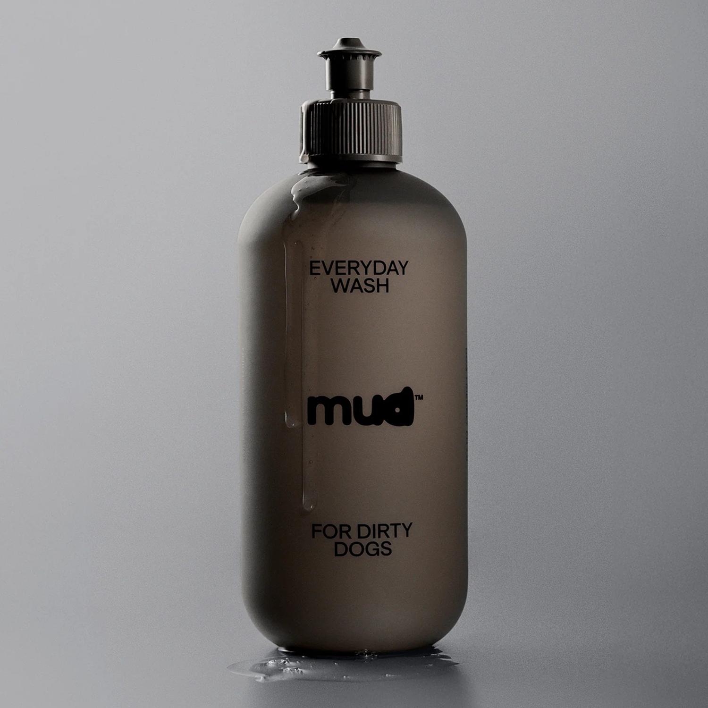
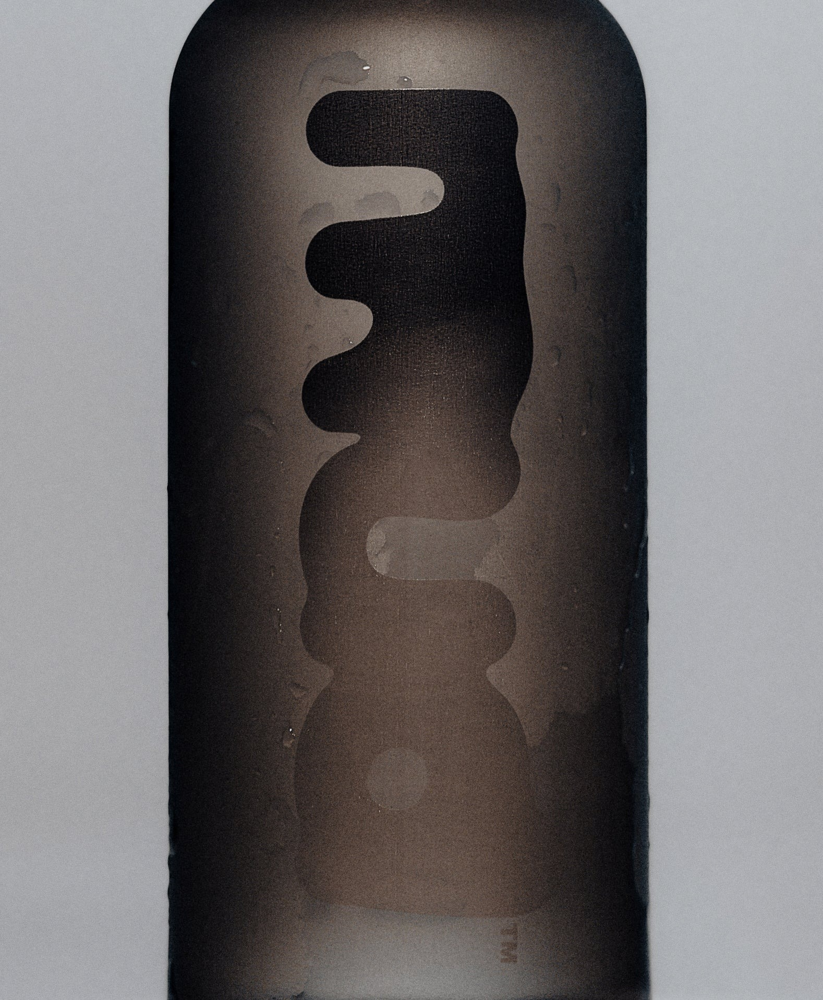
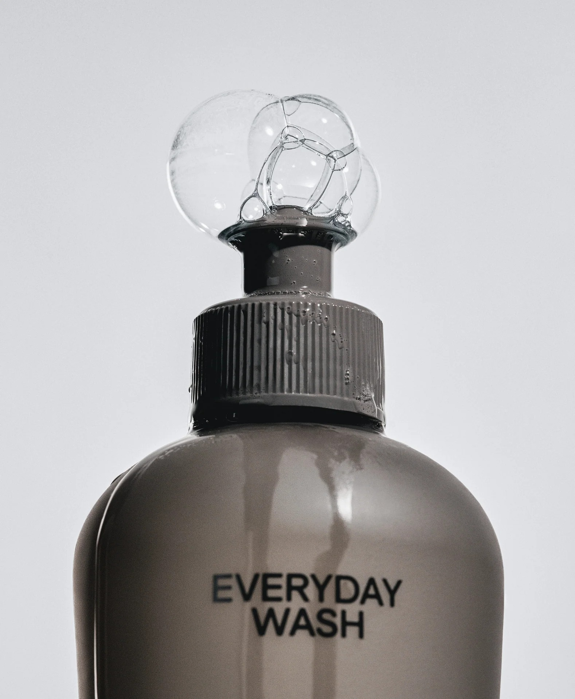
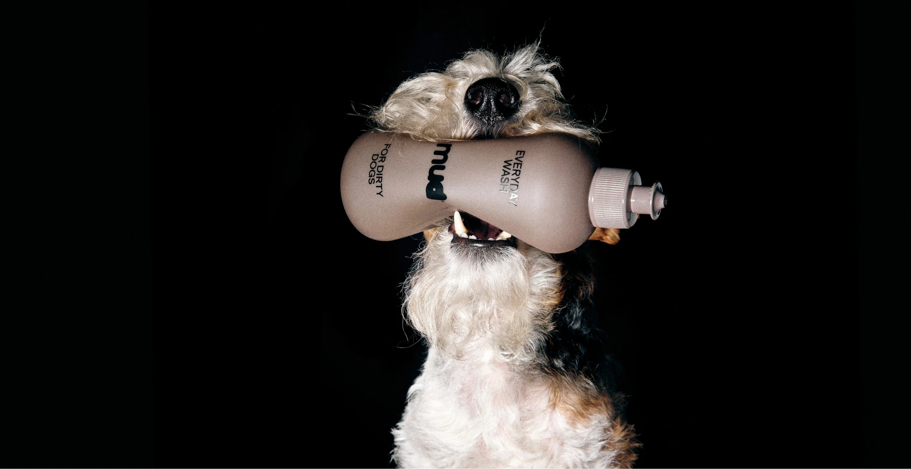
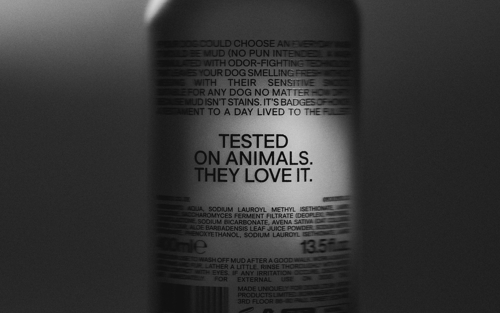
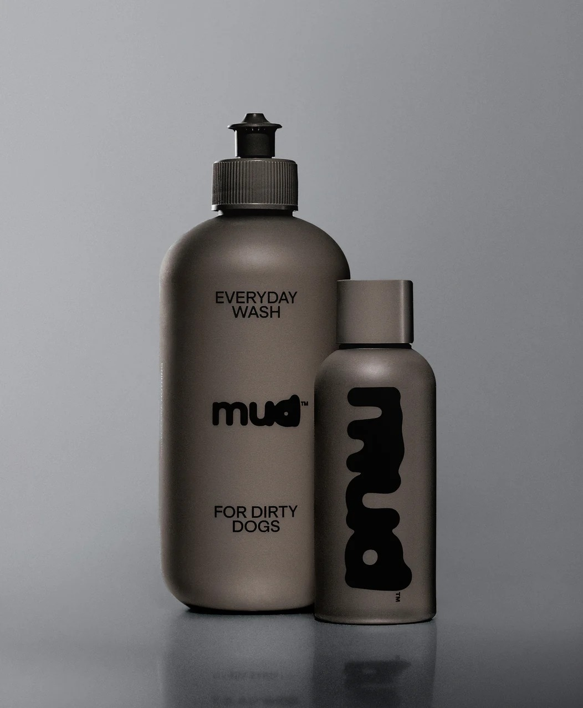

Dog Wash
털을 잘 더럽히는 강아지를 위해 만든 피부 진정·냄새 제거 세정제입니다. 식물성 성분을 사용해 피부의 자연스러운 균형을 해치지 않으면서 부드럽게 세정하고, 털은 한결 부드럽게, 피부는 편안하게 진정시켜 줍니다. 향을 남기지 않는 무향 포뮬러로 마무리되어 부담 없이 사용할 수 있습니다. 산책 후나 뒹군 뒤처럼 오염이 걱정되는 순간은 물론, 일상 속 어떤 상황에서도 매일 사용하기에 적합합니다.

Everyday Wash for Dirty Dogs
털을 잘 더럽히는 강아지를 위해 만든 피부 진정·냄새 제거 세정제입니다. 식물성 성분을 사용해 피부의 자연스러운 균형을 해치지 않으면서 부드럽게 세정하고, 털은 한결 부드럽게, 피부는 편안하게 진정시켜 줍니다. 향을 남기지 않는 무향 포뮬러로 마무리되어 부담 없이 사용할 수 있습니다. 산책 후나 뒹군 뒤처럼 오염이 걱정되는 순간은 물론, 일상 속 어떤 상황에서도 매일 사용하기에 적합합니다.





이 샴푸를 전신 샴푸가 아닌 부분 세정용으로 매일 사용해도 괜찮은지, 혹시 잦은 사용 시 주의해야 할 점이 있는지 문의드립니다. 물로만 헹구는 것보다 나은 선택인지도 궁금합니다.
장모종 강아지를 키우고 있는데, 샴푸 후 털이 많이 뻣뻣해지거나 엉키지는 않는지 궁금합니다. 컨디셔너나 린스를 따로 사용하지 않아도 될 정도의 보습감이 있는지도 알고 싶습니다.
안녕하세요. 배송받은 상품을 확인하는 과정에서 외관에 이상이 있어 교환을 요청드립니다. 제품 자체의 기능에는 문제가 없을 수 있으나, 새 상품으로 교환받고 싶습니다. 사진 첨부가 필요하다면 안내 부탁드립니다.
안녕하세요, 고객님.
먼저 배송 과정 중 불편을 드리게 된 점 양해 부탁드립니다.
상품은 별도의 비용 없이 회수 예정이며, 정상 상품은 회수 접수 완료 후 순차적으로 발송될 예정입니다.
교환 배송비는 당사에서 부담합니다.
감사합니다.
피부 트러블이 있는 강아지에게 사용해도 되는 성분인지, 사용 시 주의사항이 있다면 안내 부탁드립니다.
안녕하세요, 고객님.
저자극 식물성 세정 성분으로 만들어져 민감한 피부에도 사용하실 수 있습니다.
다만 트러블이 심한 경우 수의사와 상담 후 사용을 권장드립니다.
감사합니다.
배송정보
배송 업체 ㅣ CJ 대한통운 (1588-1255)
배송 지역 ㅣ 대한민국 전 지역 배송
배송 비용 ㅣ 3,500원 / 구매 금액 50,000원 이상 시 무료배송 / 제주 및 도서 산간 지역 별도 추가 금액 발생
배송 기간 ㅣ 주말·공휴일 제외 2일 ~ 5일
유의 사항
- 주문 폭주 및 공급 사정으로 인하여 지연 및 품절이 발생할 수 있습니다.
- 기본 배송기간 이상 소요되는 상품이거나, 품절 상품은 개별 연락을 드립니다.